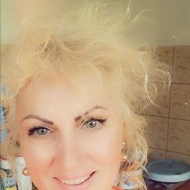

Fotografie: EAST NEWS
Fotografie: EAST NEWS
În ultimii 20 de ani, numărul persoanelor care suferă de boli articulare a crescut de aproape două ori, iar vârsta medie a pacienților a scăzut la 24 de ani. Stil de viață sedentar al oamenilor moderni, fumatul, nivelurile ridicate de stres și malnutriția sunt de vină. Artrita este o boală gravă care, în câțiva ani, poate face o persoană invalidă. Cum să vă protejați de un scaun cu rotile și să vindecați bolile articulare pentru totdeauna?

Simptomele artritei
Artrita are o varietate de simptome:
- Criza în articulațiile
- Limitarea mișcărilor
- Durerea osoasă
- Tensiunea din spate
- Dureri articulare la schimbarea de vreme
- Imobilitatea
- Slăbiciunea generală a corpului
- Umflarea sau mărirea articulației
Artrita: ce-i asta?
Mecanismul de apariție a artritei este relativ simplu și a fost mult timp studiat. Boala, adesea, apare atunci când microorganismele patogene intră în organism. În acest caz, se declanșează o reacție imună naturală care suprimă infecția. Din cauza defecțiunilor sistemului de protecție, imunitatea distruge atât celulele străine, cât și propriu țesutul cartilaginos.

Inovația va ajuta?
În martie 2019, oamenii de știință de la Universitatea japoneză din Osaka au publicat o declarație cu privire la o nouă metodă de tratare a artritei – imunoterapie. Imunoterapia ajută organismul să lupte numai împotriva infecției fără a-și distruge articulațiile. Din păcate, nu se potrivește tuturor. Costul său este foarte mare și nu întotdeauna dă rezultate. Există un alt dezavantaj grav al imunoterapiei: dacă nu vă convine, atunci aceasta poate provoca distrugerea completă a țesutului articular. Mulți oameni cu artroză au devenit invalizi din cauza imunoterapiei. Corpul lor nu a reacționat-o.

Alternativa imunoterapiei
Durerea nu poate fi ignorată: artrita nu trece singură. De-a lungul timpului, boala progresează și va fi mult mai greu de vindecat decât în stadiile incipiente. În plus, este imposibil să tolerați această durere intensă, vă va împiedica să vă bucurați de viață, să lucrați și chiar să dormiți.
Durerea nu poate fi ignorată: artrita nu trece singură. De-a lungul timpului, boala progresează și va fi mult mai greu de vindecat decât în stadiile incipiente. În plus, este imposibil să tolerați această durere intensă, vă va împiedica să vă bucurați de viață, să lucrați și chiar să dormiți.
Organizația Mondială a Sănătății în cadrul proiectului 'Viața sănătoasă', împreună cu medicii din Japonia, a dezvoltat un medicament inovator pentru artrită. Acest medicament blochează reacția agresivă a organismului la articulații, anesteziază și nu dăunează sănătății.
Cu câteva luni în urmă, produsul a apărut pe rafturile farmaciilor, dar alți producători au început să-l înlocuiască: acest remediu este mai ieftin și mai eficient și poate reduce vânzările altor produse pentru articulații.
Proiectul de eliberare a medicamentului a fost relansat din nou, compoziția a fost completată, iar comercializarea medicamentului a fost decisă prin Internet, pentru ca oamenii să nu mai stea la coadă în farmacii.
Tratamentul artritei fără consecințe
Până în prezent, este singurul remediu care poate opri procesele inflamatorii în articulații și poate anestezia fără efecte secundare.
are un efect vindecător asupra articulațiilor, ameliorează umflarea și durerea. În compoziția sa, uleiul din ficat de rechin, care este unul dintre ingredientele cheie, are o proprietate vindecătoare asupra organismului datorită alcoxigliceridelor conținute în acesta. Ele asigură stimularea energetică a corpului, contribuie la vindecarea țesuturilor osoase. În combinație cu ulei de eucalipt, ginseng și extract de propolis, uleiul din ficat de rechin ajută la ameliorarea simptomelor artritei și te face să te simți mult mai bine.
Pentru a obține cel mai bun efect, trebuie să utilizați de mai multe ori pe zi și să vă implicați într-o activitate fizică ușoară. Puteți să vă plimbați în aer liber, să înotați, să faceți aerobic sau dans și orice doriți. Oamenii de știință susțin că tocmai această remediu este capabilă să devină principalul tratament pentru artrită.

Până în prezent, este unul dintre cele mai bune remedii pentru tratamentul artritei. se produce numai în Japonia, dar medicii intenționează să stabilească vânzări în întreaga lume. Până s-a întâmplat acest lucru, specialiștii vând remediu de două ori mai ieftin decât era planificat. Odată ce pot vinde remediu în întreaga lume, vor crește prețul. Medicii nu vor oferi livrări la nivel mondial, dacă vor continua să vândă atât de ieftin, ei vor da faliment pur și simplu. Timpul a rămas foarte puțin pentru a reuși să cumpere la un preț record redus.


Comentarii:
Am comandat recent și, chiar câteva zile mai târziu coletul era la mine acasă! Atât de repede nici măcar nu livrează e-mail expres, mulțumesc!
Iuliana Parcari
Vorbești serios? Te-ai uns cu remediu și asta-i tot, nu va fi nici o problemă?
Alexei Berschi
Iuliana, asta e ideea că salvează chiar și cele mai rele cazuri. Remediu se freacă până la penetrarea completă, anesteziază și tratează bine. Este mult mai bine decât o tona de pastile, injecții și picurătoare. Încercați, ar trebui să ajute, eu vă spun ca un specialist!
Mi-a plăcut . O să mai comand!
Am luat-o pentru mama. Înainte de chiar nu a putut să se ridice: articulațiile i se umflaseră și pielea era fierbinte. Cât de chinuită era! De îndată ce a început să folosească , mama a uitat, în general, câți ani are. Picioarele nu dor, mâinile sunt în regulă, se ocupă de grădina preferată de acasă și de nepoți! Are 80 de ani deja!
Cornel Gogoșu
Articol grozav!
M-am ridicat pe picioare după primul curs al ! Toți cei care sunt îngrijorați că această remediu este plină de prostii, atunci pierdeți mult, vă spun!
Interesant, poate și eu încerc
Voi toți nu credeți, iar eu deja am avut un copil!)) Am fost îngrijorată de faptul că articulațiile dureroase mi-ar complica sarcina și, prin urmare, am ezitat să am copilul, iar timpul trecea ((Am încercat totul: atât agenții hormonali, cât și injecțiile, cât de multe pastile am băut, nimic nu mi-a ajutat! Și apoi prietena a sfătuit remediu și chiar într-un curs m-am simțit mai bine, deja în luna următoare noi așteptam un bebeluș)) Iată un pic de odihnă și ne ducem pentru al doilea în timp ce sănătatea încă ne permite!
Da, copiii sunt fericirea, iar nepoții sunt dublă fericirea! Acum, copiii mei lasă cu mine nepoții mai des, și mă bucur, după mă simt tânără, ca și cum nu sunt bunica lor, ci mama!!
Voi încerca să iau pentru mama, sper că aceasta va ajuta
Mă bucur că am început să trăiesc fără durere! Mulțumesc! Am de gând să merg la schi cu fiicele mele în timpul iernii, înainte să mă tem chiar să mă gândesc la activități fizice, și aici sunt atât de norocos cu